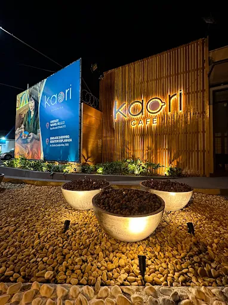
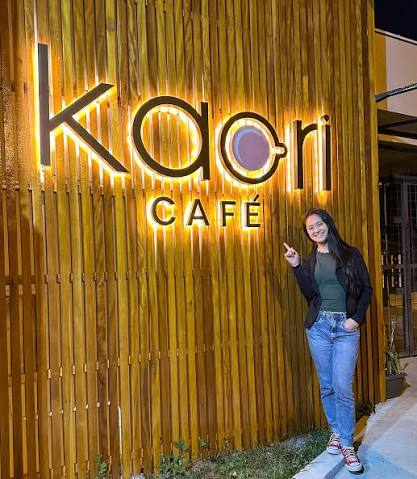
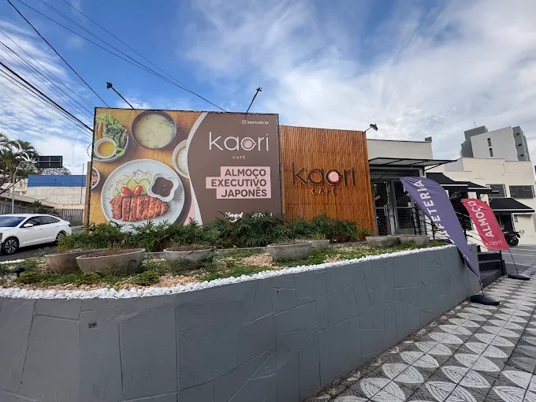

Katsusando
Shokupan fofinho recheado com mignon suíno empanado e molho especial.
Destaque da casa日本のカフェ · Sorocaba
Café e cappuccino feitos com carinho, panificação própria e aquele toque especial da comida japonesa — tudo fresquinho e preparado na hora.
Ter a dom · 8h às 20h


私たちについて · Sobre nós
kaori
“aroma”, em japonês
O Kaori chegou trazendo itens exclusivos inspirados nas cafeterias japonesas. Da nossa confeitaria saem doces e salgados como o choux cream e o roll cake; da cozinha, clássicos como okonomiyaki, bao e nikuman. Para o café da manhã, um lanche à tarde ou para matar a fome no dia a dia.
定食 · Teishoku
O jeito japonês de almoçar: um prato principal acompanhado de arroz, missoshiru e pequenos acompanhamentos, tudo servido junto em uma bandeja.

空間 · O espaço
“Fui bem atendida… comida e bebida atenderam as minhas expectativas.”
Lu · Google
“Tem lanches, bolos e uns doces japonês muito gostosos.”
Zelia · Google
アクセス · Visite
| Segunda | Fechado |
|---|---|
| Terça | 8h – 20h |
| Quarta | 8h – 20h |
| Quinta | 8h – 20h |
| Sexta | 8h – 20h |
| Sábado | 8h – 20h |
| Domingo | 8h – 20h |